pacman::p_load(sf, spatstat, tmap, tidyverse)Nor Hendra
Geospatial Analytics & Applications
2nd Order Spatial Point Patterns Analysis Methods
1. Learning Outcome
In this study draft I am moving on from first-order SPPA to second-order spatial point pattern analysis. This step shows me how the presence of one point influences the location of others, which goes beyond simply describing overall density. I am using spatstat functions to investigate clustering, dispersion, or randomness at different spatial scales, for the childcare centres in Singapore.
The two questions I am still trying to answer are:
- Are the childcare centres in Singapore randomly distributed throughout the country?
- If not, where are the locations with higher concentration of childcare centres?
2. The Data
I am using the same two data sets as in the first-order exercise, both in geojson format:
- Child Care Services, a point feature data set giving the location and attributes of childcare centres.
- Master Plan 2019 Subzone Boundary (No Sea), a polygon feature data set giving the URA 2019 Master Plan Planning Subzone boundaries.
3. Installing and Loading the R Packages
I need four R packages for this exercise:
- sf to import, manage, and process vector-based geospatial data.
- spatstat to perform 1st and 2nd order spatial point pattern analysis.
- tmap to plot cartographic quality static and interactive point pattern maps.
- tidyverse for general data wrangling.
4. Data Import and Preparation
I found that the geospatial import and wrangling steps here are the same ones I already worked through in Hands-on_Ex02A, so I am reusing the same objects rather than repeating the full explanation.
Note
The reference material points back to the KML-based import steps from chap04. I am importing directly from geojson instead, the same way I did in my earlier study draft. I am skipping the extract_kml_field() and rvest step again, since my geojson files already carry REGION_N, PLN_AREA_N, SUBZONE_N, and SUBZONE_C as flat columns rather than nesting them inside a KML Description field.
mpsz_cl <- st_read(dsn = "data/geospatial/MasterPlan2019SubzoneBoundaryNoSeaGEOJSON.geojson") %>%
st_transform(crs = 3414) %>%
filter(SUBZONE_N != "SOUTHERN GROUP",
PLN_AREA_N != "WESTERN ISLANDS",
PLN_AREA_N != "NORTH-EASTERN ISLANDS")Reading layer `URA_MP19_SUBZONE_NO_SEA_PL' from data source
`/Users/norhendra/norhendra/ISSS626-GAA/Hands-on_Ex/Hands-on_Ex02/data/geospatial/MasterPlan2019SubzoneBoundaryNoSeaGEOJSON.geojson'
using driver `GeoJSON'
Simple feature collection with 332 features and 13 fields
Geometry type: MULTIPOLYGON
Dimension: XY
Bounding box: xmin: 103.6057 ymin: 1.158699 xmax: 104.0885 ymax: 1.470775
Geodetic CRS: WGS 84childcare_sf <- st_read(dsn = "data/geospatial/ChildCareServices.geojson") %>%
st_transform(crs = 3414)Reading layer `CHILDCARE' from data source
`/Users/norhendra/norhendra/ISSS626-GAA/Hands-on_Ex/Hands-on_Ex02/data/geospatial/ChildCareServices.geojson'
using driver `GeoJSON'
Simple feature collection with 1925 features and 16 fields
Geometry type: POINT
Dimension: XY
Bounding box: xmin: 103.6878 ymin: 1.247759 xmax: 103.9897 ymax: 1.462134
Geodetic CRS: WGS 84I noticed the reference applies rjitter() to the childcare ppp object before continuing. This step is worth paying attention to, since spatstat’s second-order functions such as Gest() and Kest() are distance-based, and if two points share the exact same coordinates the nearest neighbour distance between them becomes zero, which can distort the estimated function near the origin. Jittering nudges duplicate points apart by a tiny random amount so this does not happen.
childcare_ppp <- as.ppp(childcare_sf) %>%
rjitter(retry = TRUE, nsim = 1, drop = TRUE)sg_owin <- as.owin(mpsz_cl)I am narrowing the analysis to the same two planning areas the reference uses for the second-order tests, Choa Chu Kang and Tampines, plus the Punggol and Jurong West areas I also prepared in the first-order exercise so I have them ready if I want to extend the comparison later.
pg <- mpsz_cl %>% filter(PLN_AREA_N == "PUNGGOL")
tm <- mpsz_cl %>% filter(PLN_AREA_N == "TAMPINES")
ck <- mpsz_cl %>% filter(PLN_AREA_N == "CHOA CHU KANG")
jw <- mpsz_cl %>% filter(PLN_AREA_N == "JURONG WEST")
pg_owin <- as.owin(pg)
tm_owin <- as.owin(tm)
ck_owin <- as.owin(ck)
jw_owin <- as.owin(jw)
childcare_pg_ppp <- childcare_ppp[pg_owin]
childcare_tm_ppp <- childcare_ppp[tm_owin]
childcare_ck_ppp <- childcare_ppp[ck_owin]
childcare_jw_ppp <- childcare_ppp[jw_owin]
childcare_pg_ppp.km <- rescale.ppp(childcare_pg_ppp, 1000, "km")
childcare_tm_ppp.km <- rescale.ppp(childcare_tm_ppp, 1000, "km")
childcare_ck_ppp.km <- rescale.ppp(childcare_ck_ppp, 1000, "km")
childcare_jw_ppp.km <- rescale.ppp(childcare_jw_ppp, 1000, "km")par(mfrow = c(2, 2))
plot(unmark(childcare_pg_ppp.km), main = "Punggol")
plot(unmark(childcare_tm_ppp.km), main = "Tampines")
plot(unmark(childcare_ck_ppp.km), main = "Choa Chu Kang")
plot(unmark(childcare_jw_ppp.km), main = "Jurong West")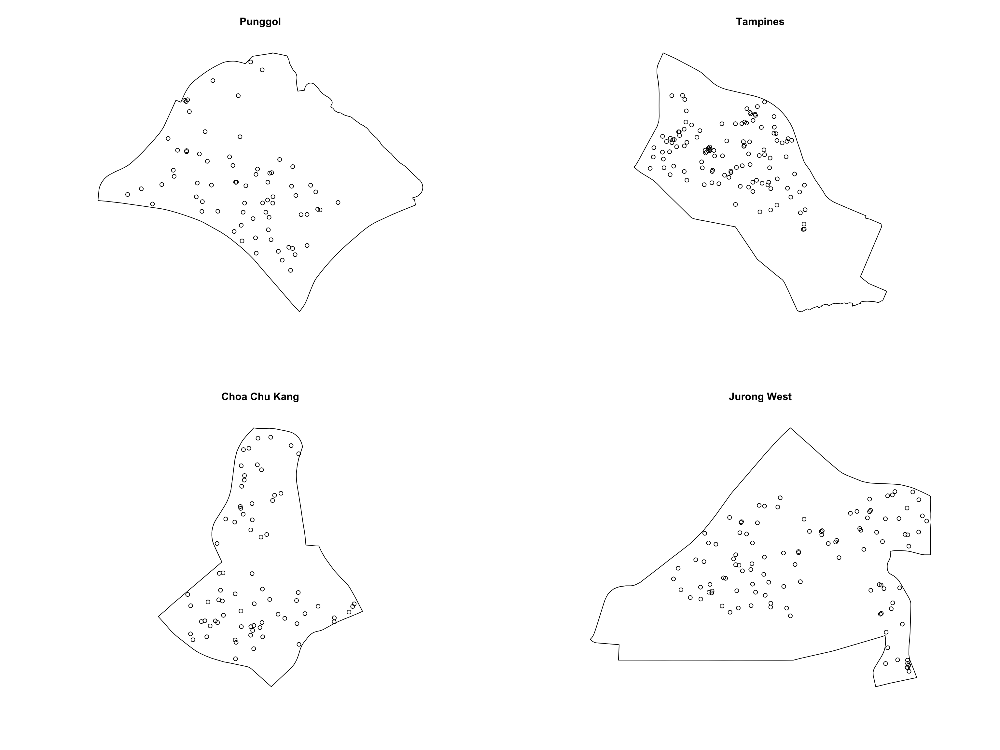
Running this code produces the four planning area point patterns again, ready for second-order analysis.
5. Second-order Spatial Point Patterns Analysis
I am using four spatstat summary functions in this section: G, F, K, and L. Each of them looks at the spatial relationships between points from a slightly different angle, so I found it useful to run all four on the same two planning areas and compare what each one tells me.
5.1 Analysing Spatial Point Process Using the G-Function
The G-function measures the distribution of distances from an arbitrary event to its nearest event. I am computing this with Gest() and testing significance with envelope().
5.1.1 Choa Chu Kang planning area
set.seed(1234)G_CK <- Gest(childcare_ck_ppp, correction = "border")
plot(G_CK, xlim = c(0, 500))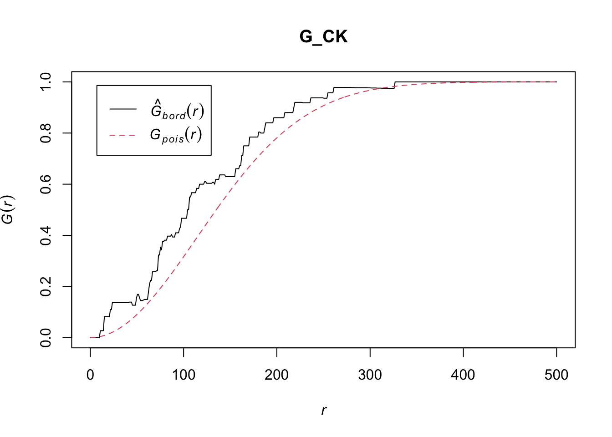
My hypotheses for this test are:
- H0: the distribution of childcare services at Choa Chu Kang is randomly distributed.
- H1: the distribution of childcare services at Choa Chu Kang is not randomly distributed.
I am rejecting the null hypothesis if the p-value is smaller than an alpha value of 0.001.
G_CK.csr <- envelope(childcare_ck_ppp, Gest, nsim = 999)Generating 999 simulated realisations of CSR ...
1, 2, 3, ......10.........20.........30.........40.........50.........60..
.......70.........80.........90.........100.........110.........120.........130
.........140.........150.........160.........170.........180.........190........
.200.........210.........220.........230.........240.........250.........260......
...270.........280.........290.........300.........310.........320.........330....
.....340.........350.........360.........370.........380.........390.........400..
.......410.........420.........430.........440.........450.........460.........470
.........480.........490.........500.........510.........520.........530........
.540.........550.........560.........570.........580.........590.........600......
...610.........620.........630.........640.........650.........660.........670....
.....680.........690.........700.........710.........720.........730.........740..
.......750.........760.........770.........780.........790.........800.........810
.........820.........830.........840.........850.........860.........870........
.880.........890.........900.........910.........920.........930.........940......
...950.........960.........970.........980.........990........
999.
Done.plot(G_CK.csr)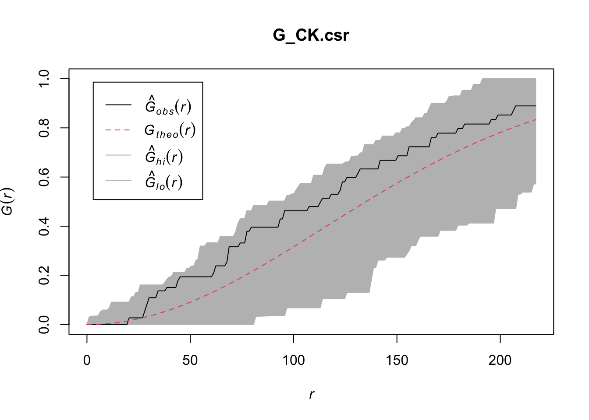
5.1.2 Tampines planning area
G_tm <- Gest(childcare_tm_ppp, correction = "best")
plot(G_tm)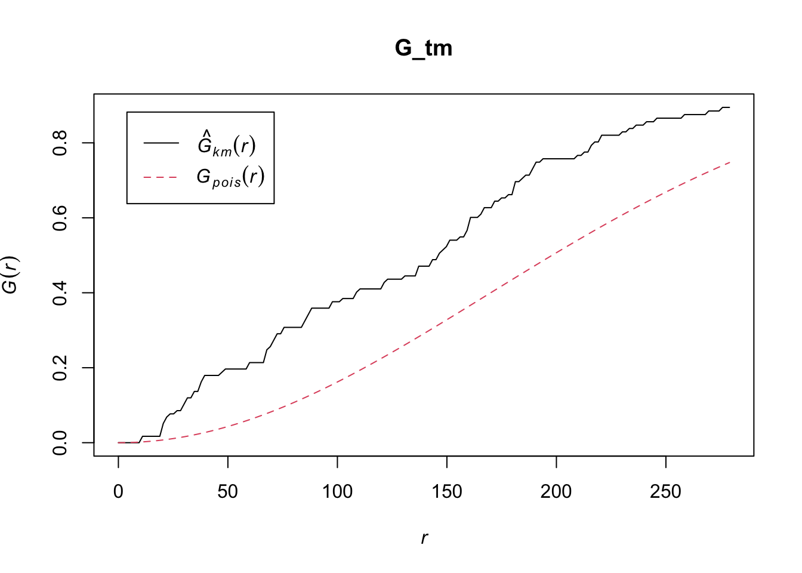
My hypotheses here are:
- H0: the distribution of childcare services at Tampines is randomly distributed.
- H1: the distribution of childcare services at Tampines is not randomly distributed.
I am again rejecting the null hypothesis if the p-value is smaller than 0.001.
G_tm.csr <- envelope(childcare_tm_ppp, Gest, correction = "all", nsim = 999)Generating 999 simulated realisations of CSR ...
1, 2, 3, ......10.........20.........30.........40.........50.........60..
.......70.........80.........90.........100.........110.........120.........130
.........140.........150.........160.........170.........180.........190........
.200.........210.........220.........230.........240.........250.........260......
...270.........280.........290.........300.........310.........320.........330....
.....340.........350.........360.........370.........380.........390.........400..
.......410.........420.........430.........440.........450.........460.........470
.........480.........490.........500.........510.........520.........530........
.540.........550.........560.........570.........580.........590.........600......
...610.........620.........630.........640.........650.........660.........670....
.....680.........690.........700.........710.........720.........730.........740..
.......750.........760.........770.........780.........790.........800.........810
.........820.........830.........840.........850.........860.........870........
.880.........890.........900.........910.........920.........930.........940......
...950.........960.........970.........980.........990........
999.
Done.plot(G_tm.csr)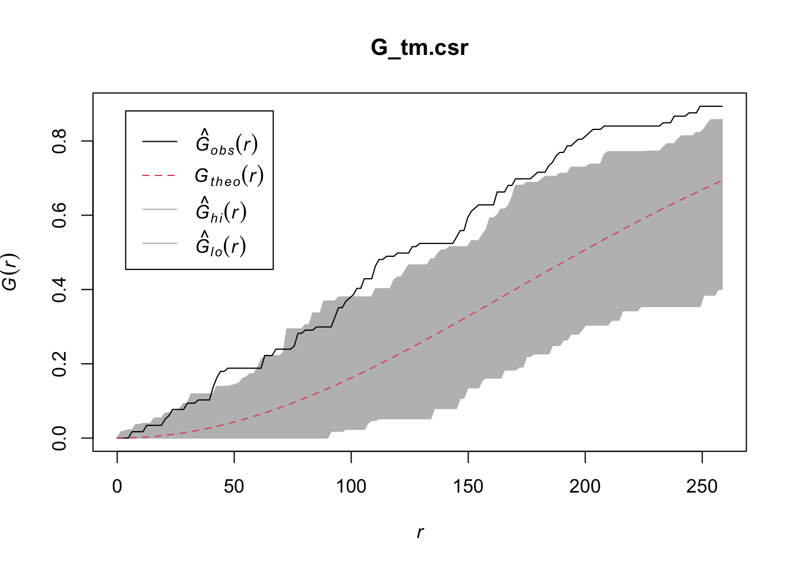
I found that comparing these two envelope plots side by side is useful. If the observed G-function line sits above the envelope, it suggests clustering at short distances, since points have closer nearest neighbours than a random pattern would produce.
5.2 Analysing Spatial Point Process Using the F-Function
The F-function, also called the empty space function, estimates the distribution of distances from a fixed set of reference locations to the nearest point of the pattern.
5.2.1 Choa Chu Kang planning area
F_CK <- Fest(childcare_ck_ppp)
plot(F_CK)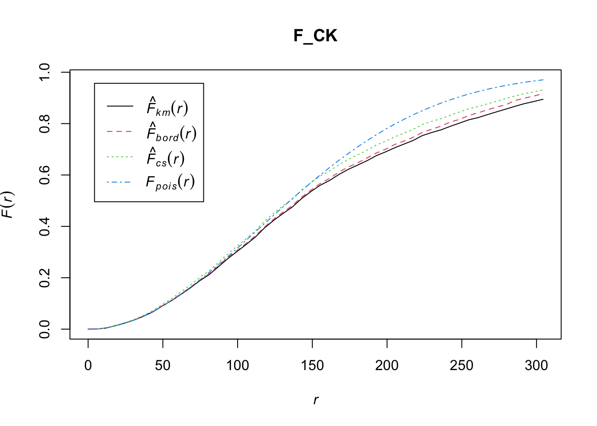
My hypotheses are:
- H0: the distribution of childcare services at Choa Chu Kang is randomly distributed.
- H1: the distribution of childcare services at Choa Chu Kang is not randomly distributed.
I am rejecting the null hypothesis if the p-value is smaller than 0.001.
F_CK.csr <- envelope(childcare_ck_ppp, Fest, nsim = 999)Generating 999 simulated realisations of CSR ...
1, 2, 3, ......10.........20.........30.........40.........50.........60..
.......70.........80.........90.........100.........110.........120.........130
.........140.........150.........160.........170.........180.........190........
.200.........210.........220.........230.........240.........250.........260......
...270.........280.........290.........300.........310.........320.........330....
.....340.........350.........360.........370.........380.........390.........400..
.......410.........420.........430.........440.........450.........460.........470
.........480.........490.........500.........510.........520.........530........
.540.........550.........560.........570.........580.........590.........600......
...610.........620.........630.........640.........650.........660.........670....
.....680.........690.........700.........710.........720.........730.........740..
.......750.........760.........770.........780.........790.........800.........810
.........820.........830.........840.........850.........860.........870........
.880.........890.........900.........910.........920.........930.........940......
...950.........960.........970.........980.........990........
999.
Done.plot(F_CK.csr)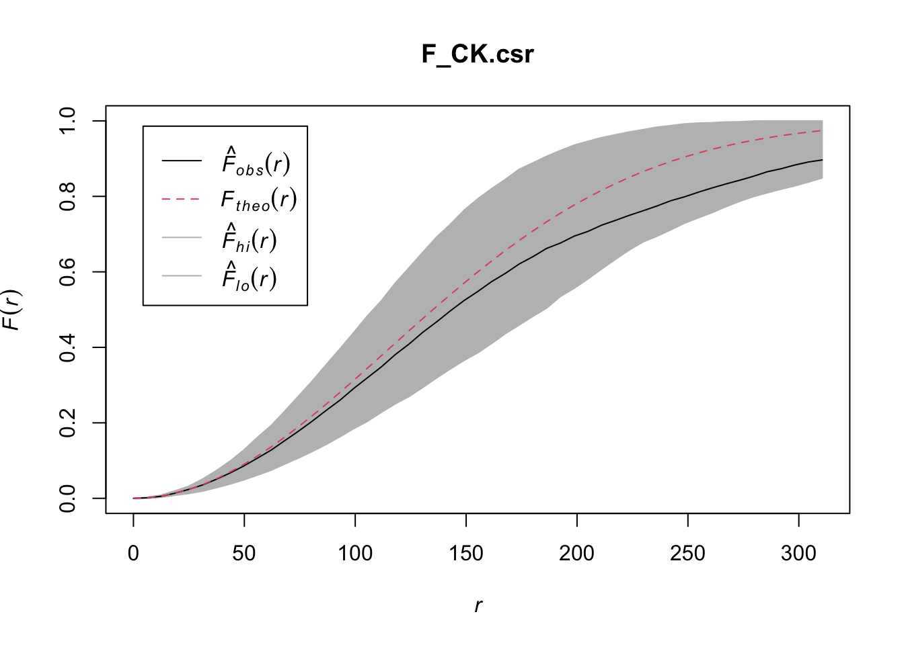
5.2.2 Tampines planning area
F_tm <- Fest(childcare_tm_ppp, correction = "best")
plot(F_tm)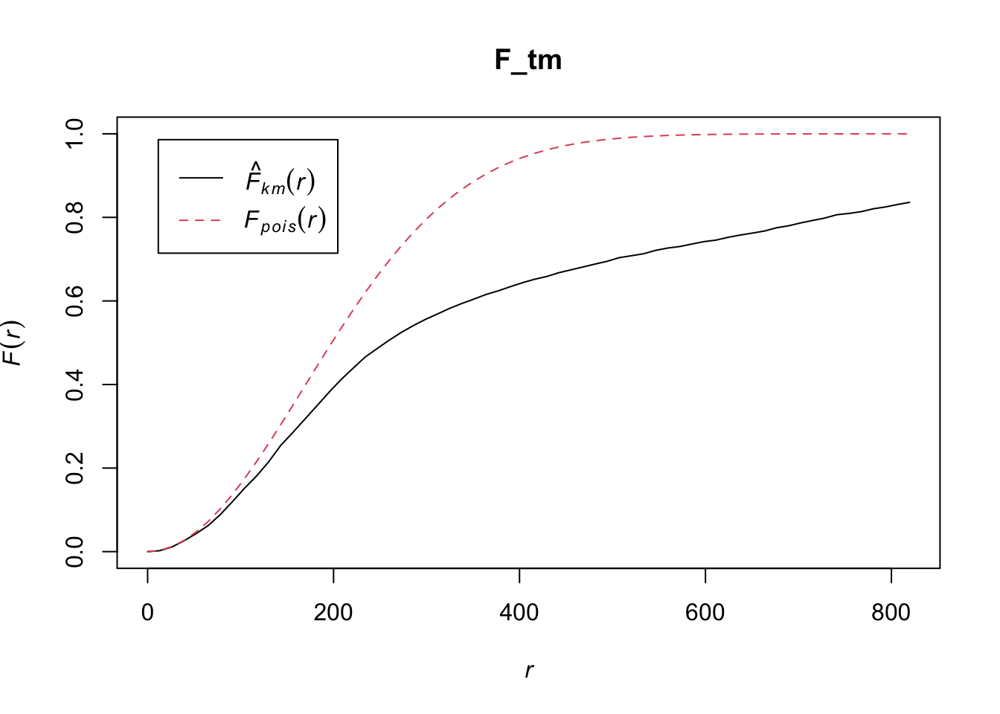
My hypotheses are:
- H0: the distribution of childcare services at Tampines is randomly distributed.
- H1: the distribution of childcare services at Tampines is not randomly distributed.
I am rejecting the null hypothesis if the p-value is smaller than 0.001.
F_tm.csr <- envelope(childcare_tm_ppp, Fest, correction = "all", nsim = 999)Generating 999 simulated realisations of CSR ...
1, 2, 3, ......10.........20.........30.........40.........50.........60..
.......70.........80.........90.........100.........110.........120.........130
.........140.........150.........160.........170.........180.........190........
.200.........210.........220.........230.........240.........250.........260......
...270.........280.........290.........300.........310.........320.........330....
.....340.........350.........360.........370.........380.........390.........400..
.......410.........420.........430.........440.........450.........460.........470
.........480.........490.........500.........510.........520.........530........
.540.........550.........560.........570.........580.........590.........600......
...610.........620.........630.........640.........650.........660.........670....
.....680.........690.........700.........710.........720.........730.........740..
.......750.........760.........770.........780.........790.........800.........810
.........820.........830.........840.........850.........860.........870........
.880.........890.........900.........910.........920.........930.........940......
...950.........960.........970.........980.........990........
999.
Done.plot(F_tm.csr)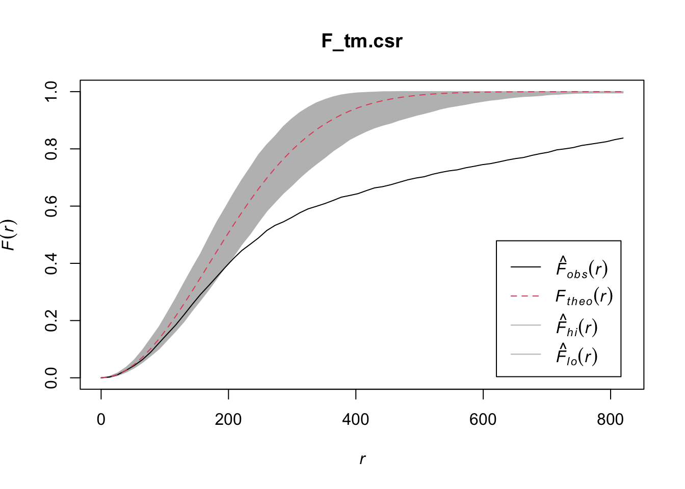
Note
I noticed that the F-function reads in the opposite direction to the G-function. For F, an observed line that sits below the envelope suggests clustering, since it means empty space is larger than expected under CSR, which happens when points are grouped together and leave larger gaps elsewhere.
5.3 Analysing Spatial Point Process Using the K-Function
The K-function measures the expected number of additional points found within a given distance of a typical point, which lets me look at clustering across a whole range of spatial scales in one function rather than just at the nearest neighbour scale.
5.3.1 Choa Chu Kang planning area
K_ck <- Kest(childcare_ck_ppp, correction = "Ripley")
plot(K_ck, . - r ~ r, ylab = "K(d)-r", xlab = "d(m)")My hypotheses are:
- H0: the distribution of childcare services at Choa Chu Kang is randomly distributed.
- H1: the distribution of childcare services at Choa Chu Kang is not randomly distributed.
I am rejecting the null hypothesis if the p-value is smaller than 0.001.
K_ck.csr <- envelope(childcare_ck_ppp, Kest, nsim = 99, rank = 1, global = TRUE)Generating 99 simulated realisations of CSR ...
1, 2, 3, 4, 5, 6, 7, 8, 9, 10, 11, 12, 13, 14, 15, 16, 17, 18, 19, 20,
21, 22, 23, 24, 25, 26, 27, 28, 29, 30, 31, 32, 33, 34, 35, 36, 37, 38, 39, 40,
41, 42, 43, 44, 45, 46, 47, 48, 49, 50, 51, 52, 53, 54, 55, 56, 57, 58, 59, 60,
61, 62, 63, 64, 65, 66, 67, 68, 69, 70, 71, 72, 73, 74, 75, 76, 77, 78, 79, 80,
81, 82, 83, 84, 85, 86, 87, 88, 89, 90, 91, 92, 93, 94, 95, 96, 97, 98,
99.
Done.plot(K_ck.csr, . - r ~ r, xlab = "d", ylab = "K(d)-r")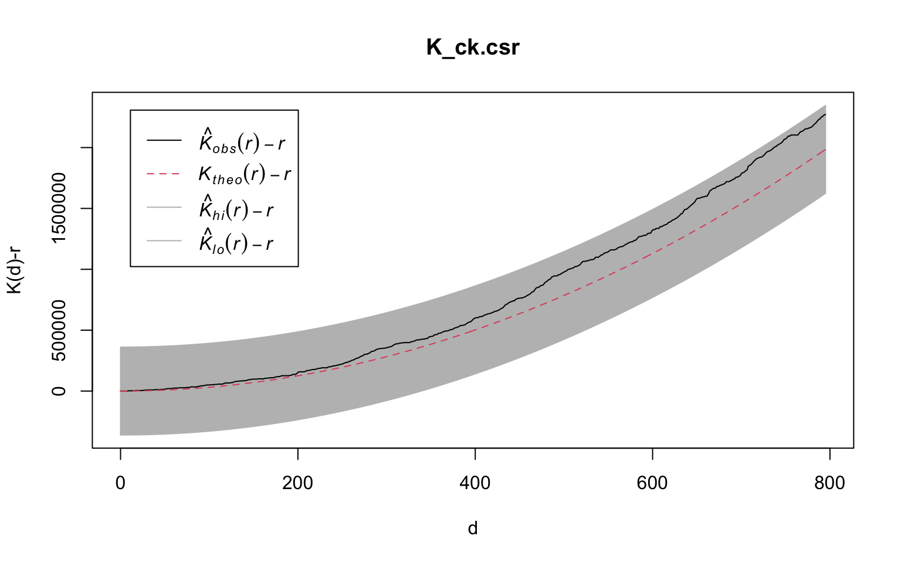
5.3.2 Tampines planning area
K_tm <- Kest(childcare_tm_ppp, correction = "Ripley")
plot(K_tm, . - r ~ r, ylab = "K(d)-r", xlab = "d(m)", xlim = c(0, 1000))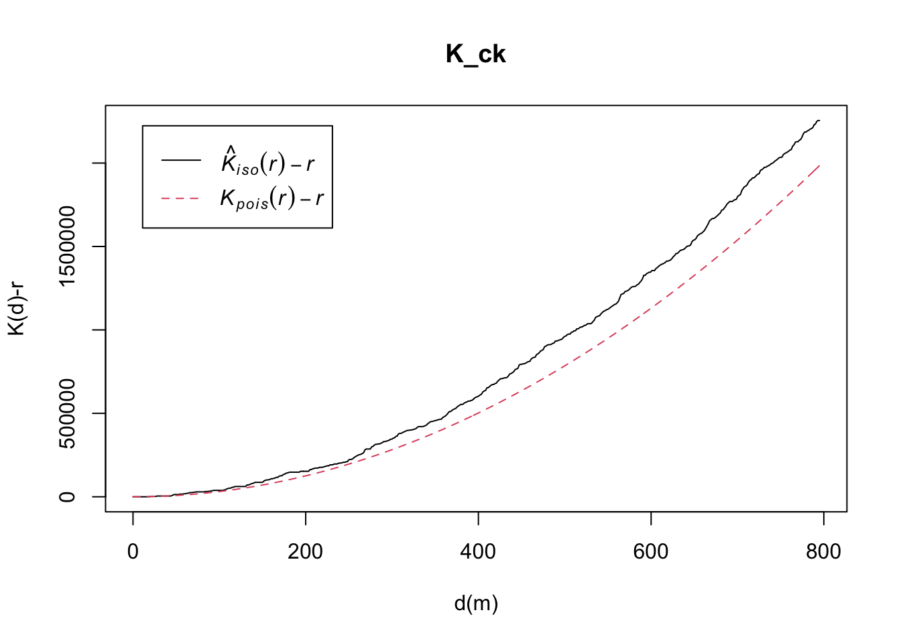
My hypotheses are:
- H0: the distribution of childcare services at Tampines is randomly distributed.
- H1: the distribution of childcare services at Tampines is not randomly distributed.
I am rejecting the null hypothesis if the p-value is smaller than 0.001.
K_tm.csr <- envelope(childcare_tm_ppp, Kest, nsim = 99, rank = 1, global = TRUE)Generating 99 simulated realisations of CSR ...
1, 2, 3, 4, 5, 6, 7, 8, 9, 10, 11, 12, 13, 14, 15, 16, 17, 18, 19, 20,
21, 22, 23, 24, 25, 26, 27, 28, 29, 30, 31, 32, 33, 34, 35, 36, 37, 38, 39, 40,
41, 42, 43, 44, 45, 46, 47, 48, 49, 50, 51, 52, 53, 54, 55, 56, 57, 58, 59, 60,
61, 62, 63, 64, 65, 66, 67, 68, 69, 70, 71, 72, 73, 74, 75, 76, 77, 78, 79, 80,
81, 82, 83, 84, 85, 86, 87, 88, 89, 90, 91, 92, 93, 94, 95, 96, 97, 98,
99.
Done.plot(K_tm.csr, . - r ~ r, xlab = "d", ylab = "K(d)-r", xlim = c(0, 500))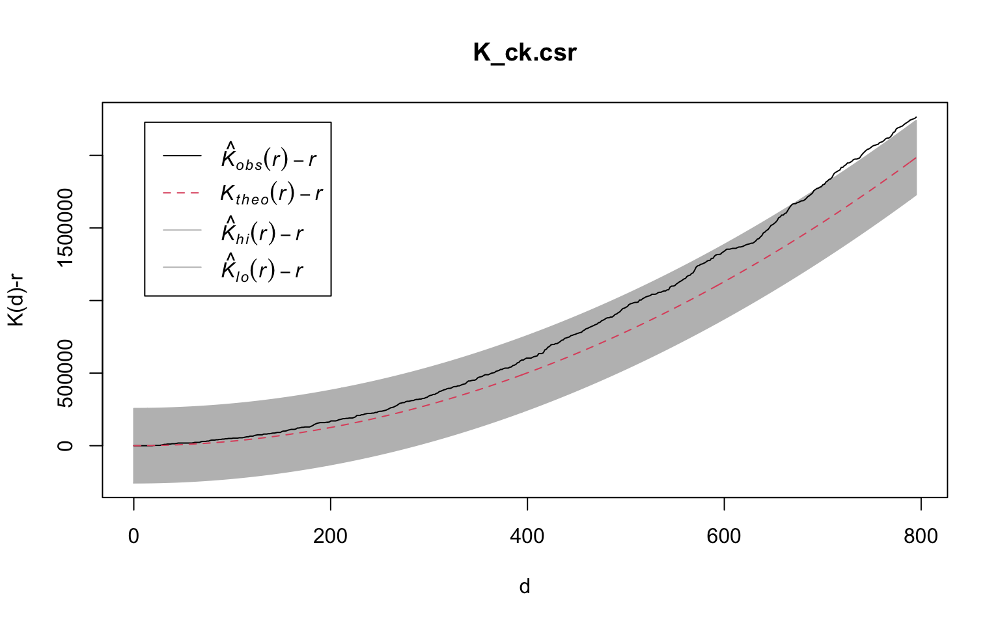
5.4 Analysing Spatial Point Process Using the L-Function
The L-function is Besag’s variance-stabilising transformation of the K-function. I found it easier to read than K directly, since the theoretical CSR line becomes flat at zero instead of curving.
5.4.1 Choa Chu Kang planning area
L_ck <- Lest(childcare_ck_ppp, correction = "Ripley")
plot(L_ck, . - r ~ r, ylab = "L(d)-r", xlab = "d(m)")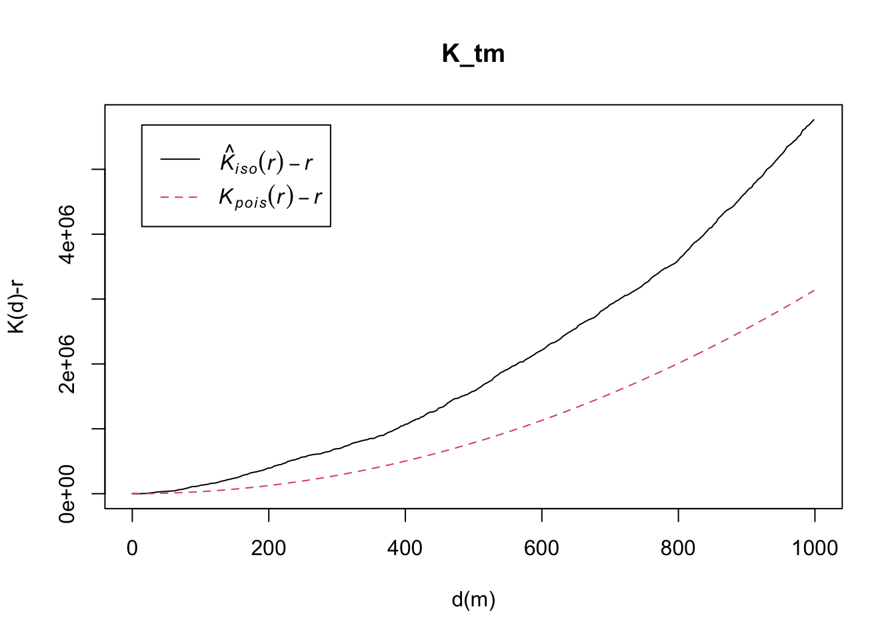
My hypotheses are:
- H0: the distribution of childcare services at Choa Chu Kang is randomly distributed.
- H1: the distribution of childcare services at Choa Chu Kang is not randomly distributed.
I am rejecting the null hypothesis if the p-value is smaller than 0.001.
L_ck.csr <- envelope(childcare_ck_ppp, Lest, nsim = 99, rank = 1, global = TRUE)Generating 99 simulated realisations of CSR ...
1, 2, 3, 4, 5, 6, 7, 8, 9, 10, 11, 12, 13, 14, 15, 16, 17, 18, 19, 20,
21, 22, 23, 24, 25, 26, 27, 28, 29, 30, 31, 32, 33, 34, 35, 36, 37, 38, 39, 40,
41, 42, 43, 44, 45, 46, 47, 48, 49, 50, 51, 52, 53, 54, 55, 56, 57, 58, 59, 60,
61, 62, 63, 64, 65, 66, 67, 68, 69, 70, 71, 72, 73, 74, 75, 76, 77, 78, 79, 80,
81, 82, 83, 84, 85, 86, 87, 88, 89, 90, 91, 92, 93, 94, 95, 96, 97, 98,
99.
Done.plot(L_ck.csr, . - r ~ r, xlab = "d", ylab = "L(d)-r")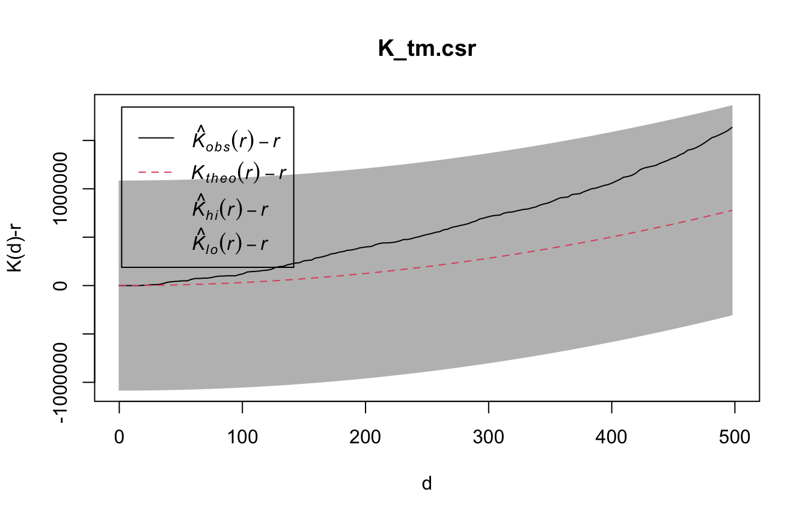
5.4.2 Tampines planning area
L_tm <- Lest(childcare_tm_ppp, correction = "Ripley")
plot(L_tm, . - r ~ r, ylab = "L(d)-r", xlab = "d(m)", xlim = c(0, 1000))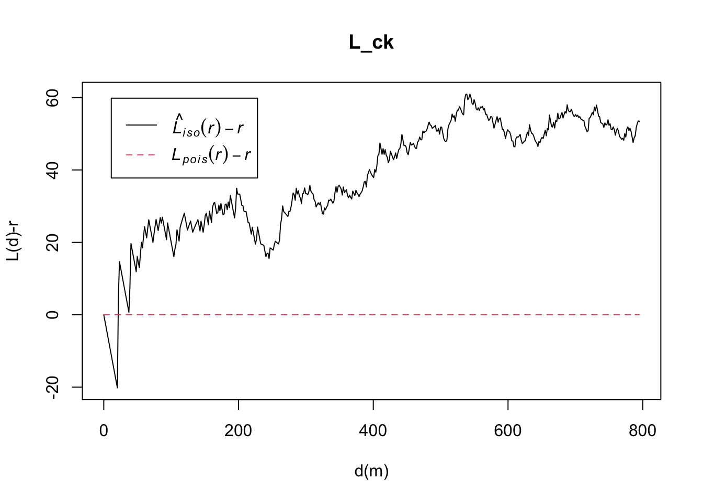
My hypotheses are:
- H0: the distribution of childcare services at Tampines is randomly distributed.
- H1: the distribution of childcare services at Tampines is not randomly distributed.
I am rejecting the null hypothesis if the p-value is smaller than 0.001.
L_tm.csr <- envelope(childcare_tm_ppp, Lest, nsim = 99, rank = 1, global = TRUE)Generating 99 simulated realisations of CSR ...
1, 2, 3, 4, 5, 6, 7, 8, 9, 10, 11, 12, 13, 14, 15, 16, 17, 18, 19, 20,
21, 22, 23, 24, 25, 26, 27, 28, 29, 30, 31, 32, 33, 34, 35, 36, 37, 38, 39, 40,
41, 42, 43, 44, 45, 46, 47, 48, 49, 50, 51, 52, 53, 54, 55, 56, 57, 58, 59, 60,
61, 62, 63, 64, 65, 66, 67, 68, 69, 70, 71, 72, 73, 74, 75, 76, 77, 78, 79, 80,
81, 82, 83, 84, 85, 86, 87, 88, 89, 90, 91, 92, 93, 94, 95, 96, 97, 98,
99.
Done.plot(L_tm.csr, . - r ~ r, xlab = "d", ylab = "L(d)-r", xlim = c(0, 500))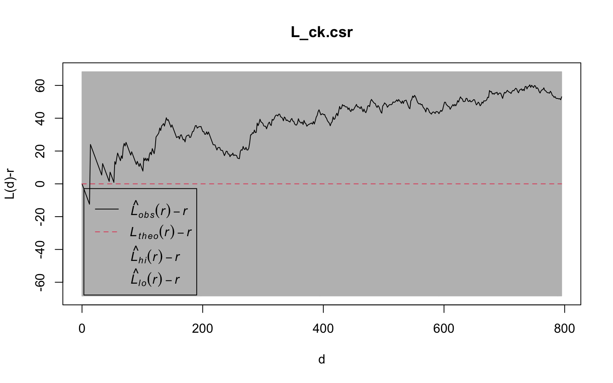
I noticed that running G, F, K, and L on the same two planning areas gives me a fuller picture than any single function alone. G and F look at the nearest neighbour scale from two different reference points, while K and L extend the view across a full range of distances. This step is worth paying attention to, since a pattern can look randomly distributed at one distance range and clustered at another, and no single function fully captures that on its own.
6. Extras
Some extras I am documenting for exploration of this topic.
6.1 Comparing pointwise and global envelopes directly
Since I corrected glocal to global in section 5.3, I found it worth actually seeing what changes between the two envelope types on the same data, rather than just taking the documentation’s word for it.
set.seed(1234)
K_ck.pointwise <- envelope(childcare_ck_ppp, Kest, nsim = 99, rank = 1, global = FALSE)Generating 99 simulated realisations of CSR ...
1, 2, 3, 4, 5, 6, 7, 8, 9, 10, 11, 12, 13, 14, 15, 16, 17, 18, 19, 20,
21, 22, 23, 24, 25, 26, 27, 28, 29, 30, 31, 32, 33, 34, 35, 36, 37, 38, 39, 40,
41, 42, 43, 44, 45, 46, 47, 48, 49, 50, 51, 52, 53, 54, 55, 56, 57, 58, 59, 60,
61, 62, 63, 64, 65, 66, 67, 68, 69, 70, 71, 72, 73, 74, 75, 76, 77, 78, 79, 80,
81, 82, 83, 84, 85, 86, 87, 88, 89, 90, 91, 92, 93, 94, 95, 96, 97, 98,
99.
Done.K_ck.global <- envelope(childcare_ck_ppp, Kest, nsim = 99, rank = 1, global = TRUE)Generating 99 simulated realisations of CSR ...
1, 2, 3, 4, 5, 6, 7, 8, 9, 10, 11, 12, 13, 14, 15, 16, 17, 18, 19, 20,
21, 22, 23, 24, 25, 26, 27, 28, 29, 30, 31, 32, 33, 34, 35, 36, 37, 38, 39, 40,
41, 42, 43, 44, 45, 46, 47, 48, 49, 50, 51, 52, 53, 54, 55, 56, 57, 58, 59, 60,
61, 62, 63, 64, 65, 66, 67, 68, 69, 70, 71, 72, 73, 74, 75, 76, 77, 78, 79, 80,
81, 82, 83, 84, 85, 86, 87, 88, 89, 90, 91, 92, 93, 94, 95, 96, 97, 98,
99.
Done.par(mfrow = c(1, 2))
plot(K_ck.pointwise, . - r ~ r, xlab = "d", ylab = "K(d)-r", main = "Pointwise envelope")
plot(K_ck.global, . - r ~ r, xlab = "d", ylab = "K(d)-r", main = "Global envelope")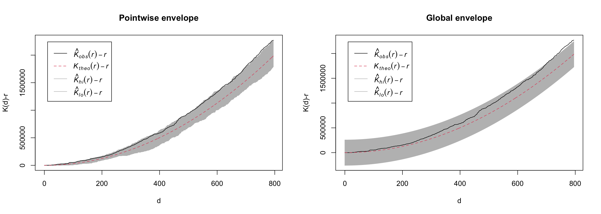
TipWhy I wanted to explore this
A pointwise envelope controls the error rate separately at each distance value, which means that across the whole plot the chance of the observed line straying outside the envelope somewhere by pure chance is higher than the nominal significance level. A global envelope controls the error rate simultaneously across all distances, so I found it is the more conservative and generally more defensible choice when I am reading a single envelope plot as a formal hypothesis test rather than as an exploratory picture. Knowing the difference matters because the two can visually look similar while supporting different strength conclusions.
6.2 Formal Monte Carlo tests alongside the envelope plots
The reference material relies entirely on visual inspection of envelope plots to judge significance. I found it worth pairing this with dclf.test(), which turns the same simulation into a single formal p-value rather than requiring a plot to be read by eye.
dclf.test(childcare_ck_ppp, Kest, nsim = 99)Generating 99 simulated realisations of CSR ...
1, 2, 3, 4, 5, 6, 7, 8, 9, 10, 11, 12, 13, 14, 15, 16, 17, 18, 19, 20,
21, 22, 23, 24, 25, 26, 27, 28, 29, 30, 31, 32, 33, 34, 35, 36, 37, 38, 39, 40,
41, 42, 43, 44, 45, 46, 47, 48, 49, 50, 51, 52, 53, 54, 55, 56, 57, 58, 59, 60,
61, 62, 63, 64, 65, 66, 67, 68, 69, 70, 71, 72, 73, 74, 75, 76, 77, 78, 79, 80,
81, 82, 83, 84, 85, 86, 87, 88, 89, 90, 91, 92, 93, 94, 95, 96, 97, 98,
99.
Done.
Diggle-Cressie-Loosmore-Ford test of CSR
Monte Carlo test based on 99 simulations
Summary function: K(r)
Reference function: theoretical
Alternative: two.sided
Interval of distance values: [0, 794.97309999941]
Test statistic: Integral of squared absolute deviation
Deviation = observed minus theoretical
data: childcare_ck_ppp
u = 1.8112e+13, rank = 2, p-value = 0.02
TipWhy I wanted to explore this
Reading significance off an envelope plot works well for a quick visual check, but it can be ambiguous when the observed line only pokes outside the envelope for part of the distance range. The dclf.test() function summarises the same simulated data into one deviation statistic and a single p-value, which removes the guesswork of deciding by eye whether a partial excursion outside the envelope counts as significant. I found this a useful companion to the envelope plots rather than a replacement for them, since the plot still shows me where along the distance range the deviation happens.
Summary of Adjustments
| Location in reference | Issue found | Correction applied |
|---|---|---|
| Section 4 (Data Import and Preparation) | Reference assumes KML input requiring extract_kml_field() and rvest |
My geojson files already store the needed fields as flat columns, so this step is skipped as not applicable to my data format |
Section 5.3 and 5.4 (K-function and L-function), all four envelope() calls |
Argument glocal = TRUE used, which I did not find documented spatstat argument |
Changed to global = TRUE, the argument that showed in my call, switches the simulation envelope from pointwise to global |